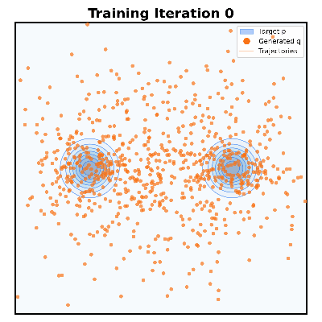
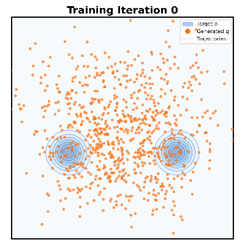
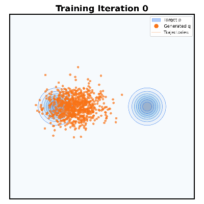

| Middle Init | Far-Away Init | Collapsed Init |
|---|---|---|
|  |  |  |
Generative modeling can be formulated as learning a mapping f such that its pushforward distribution matches the data distribution. The pushforward behavior can be carried out iteratively at inference time, e.g., in diffusion/flow-based models. In this paper, we propose a new paradigm called Drifting Models, which evolve the pushforward distribution during training and naturally admit one-step inference. We introduce a drifting field that governs the sample movement and achieves equilibrium when the distributions match. This leads to a training objective that allows the neural network optimizer to evolve the distribution. In experiments, our one-step generator achieves state-of-the-art results on ImageNet 256×256, with FID 1.54 in latent space and 1.61 in pixel space.
Uncurated conditional ImageNet 256×256 samples (1 NFE, CFG Scale 1.0, FID 1.54)
Interactive notebook demonstrating the core algorithm on toy 2D distributions.
ImageNet training code and models will be released.
@article{deng2026drifting,
title={Generative Modeling via Drifting},
author={Deng, Mingyang and Li, He and Li, Tianhong and Du, Yilun and He, Kaiming},
journal={arXiv preprint arXiv:2602.04770},
year={2026}
}